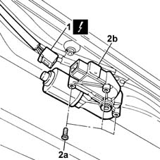

7030B70 sun-roof control switch - r+r
- Path
- Procedures > 70 FITTINGS > 7030 SUN ROOF AND HOOD > 7030B sliding roof > 7030B70 sun-roof control switch - r+r
- Kind
- repair procedure (removal / refitting; the operation number is the code)
- Applies to
- all engines; all production periods
- Interactive page
- https://sloeber94.github.io/elrnDB-lYpsln/en/#/2429561
Applies to: all engines; all production periods
 Removing
Removing
 Refitting
Refitting7065C30 interior l/h or r/h grab handle (one) - r+r (all)
7065C34 l/h or r/h sun blind (one) - r+r (left and right)
7040E10 front courtesy light - r+r
7040H30 front pillar trim - r r (left and right)
7040L40 front compartment scuff strip - r r
7050A20 one-piece rear seat cushion - r r
7040G30 boot light bulb holder - r r
7040H38 central pillar upper element - r r (left side)
7040H42 rear pillar trim - r r (left side)
7040A18 glove compartment on facia - arrange
7040A30 Left instrument panel lower TRIM - R.R.
2125A30 lever/knob cover - r + r
7040A28 TRIM on gearbox control panel - R.R.
7040H16 roof panel lining - r r
1. Disconnect the electrical connection for the sun roof motor.
 | Name | Connector |
|---|---|---|
1 | Sun roof motor |
2. Undo the fixing bolts (2a) and remove the sun roof moving motor (2b).

Applies to: all engines; all production periods
Refitting
RemovingFit the motor in place.
Tighten the bolts fixing the motor to the frame.
Connect the electrical connection for the sun roof motor.
7040H16 roof panel lining - r r
7040A28 TRIM on gearbox control panel - R.R.
7040A30 Left instrument panel lower TRIM - R.R.
2125A30 lever/knob cover - r + r
7040A18 glove compartment on facia - arrange
7040H42 rear pillar trim - r r (left side)
7040H38 central pillar upper element - r r
7040G30 boot light bulb holder - r r
7050A20 one-piece rear seat cushion - r r
7040L40 front compartment scuff strip - r r
7040H30 front pillar trim - r r (left and right)
7040E10 front courtesy light - r+r
7065C34 l/h or r/h sun blind (one) - r+r (left and right)
7065C30 interior l/h or r/h grab handle (one) - r+r (all)
After the battery has been disconnected or a fuse has blown, the system must be initialized again, proceeding as follows:
press the switch in the 'roof closed' position;
keep the switch pressed: the roof will close in stages;
keeping the switch pressed, wait for the roof to close fully until the motor is stopped;
release the switch.
Topics linked from this page (18)
- 2125A30 lever/knob cover - r + r
- 7040A18 glove compartment on facia - arrange
- 7040A28 TRIM on gearbox control panel - R.R.
- 7040A30 Left instrument panel lower TRIM - R.R.
- 7040E10 front courtesy light - r+r
- 7040G30 boot light bulb holder - r r
- 7040H16 roof panel lining - r r
- 7040H30 front pillar trim - r r
- 7040H38 central pillar upper element - r r
- 7040H42 rear pillar trim - r r
- 7040H50 rear panel - r r
- 7040L20 tunnel trim - r r
- 7040L40 front compartment scuff strip - r r
- 7050A10 rear seat - r+r
- 7050A20 one-piece rear seat cushion - r r
- 7065C30 interior l/h or r/h grab handle (one) - r+r
- 7065C34 l/h or r/h sun blind (one) - r+r
- N35 Sun roof motor